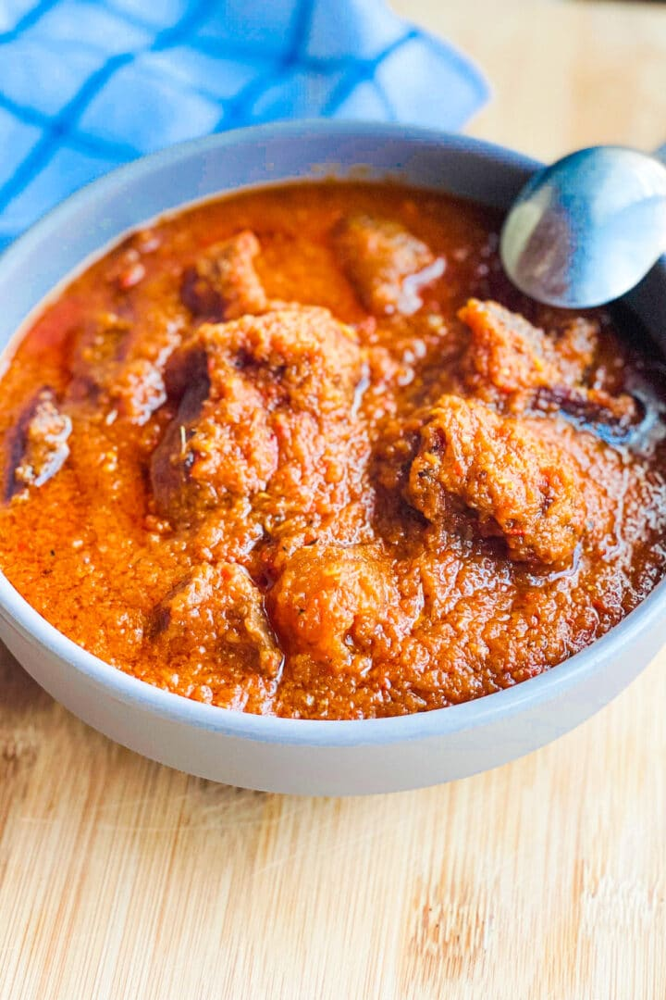

Waakye Stew Recipe

Waakye Stew
Waakye stew is a rich, savory, and deep red tomato-based stew that is the quintessential accompaniment to the Ghanaian rice and bean dish, waakye. Unlike simpler stews, waakye stew is layered with flavor through a multi-step cooking process.
Ingredients
For the protein:
- 1 kg goat meat, beef, or a mix of meats (including cow skin or tripe, if desired), cut into bite-sized pieces
- 1 large onion, chopped
- 1 thumb-sized piece of ginger
- 2–3 cloves garlic
- 1–2 Scotch bonnet peppers (or to taste)
- 1 tsp mixed spices (e.g., coriander, cumin, paprika)
- Salt to taste
For the stew base:
- 1/2 cup vegetable or groundnut oil
- 2 large onions, thinly sliced or julienned
- 1 small can (about 150g) tomato paste
- 700g fresh, ripe tomatoes, blended
- 1–2 Scotch bonnet peppers, blended with the tomatoes (optional)
- 1 tsp ground dried shrimp powder (optional, but recommended for authentic flavor)
- 1 tsp mixed spices
- 1–2 bay leaves
- Stock from steaming the meat
- Salt to taste
Instructions
- Wash and cut your meat into desired sizes
- In a pot, combine the meat, chopped onion, ginger, garlic, Scotch bonnet, mixed spices, and salt. Add a small amount of water, just enough to prevent the pot from burning.
- Steam the meat over medium heat until it is tender.
- Remove the cooked meat from the pot and set it aside. Reserve the flavorful meat stock, straining it to remove any bits.
- In a large pot or saucepan, heat the oil.
- Fry the meat in the hot oil until it is browned and has some texture. Remove the fried meat and set it aside.
- Reduce the heat and add the thinly sliced onions to the same oil. Fry until they are soft and caramelized, which should take about 10–15 minutes.
- Push the caramelized onions to the side of the pot and add the tomato paste to the center.
- Fry the tomato paste, stirring constantly, until it darkens in color. This process removes the raw, sour taste and gives the stew a deeper flavor.
- Add the blended fresh tomatoes and peppers to the pot, stirring to combine them with the tomato paste and onions.
- Continue to fry the tomato mixture, stirring regularly, until the oil separates and rises to the top. This indicates that the water has evaporated and the stew base is well-cooked.
- Add the reserved meat stock, shrimp powder, bay leaves, and mixed spices to the pot. Stir well.
- Bring the stew to a boil, then reduce the heat and let it simmer for at least 20 minutes, allowing the flavors to meld.
- Add the fried meat to the stew and stir to coat. Simmer for another 5–10 minutes.
- Taste and adjust seasoning with salt, if needed.
- Serve the rich, dark stew hot over your waakye.